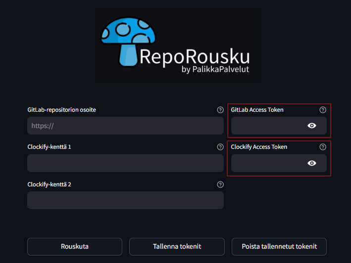
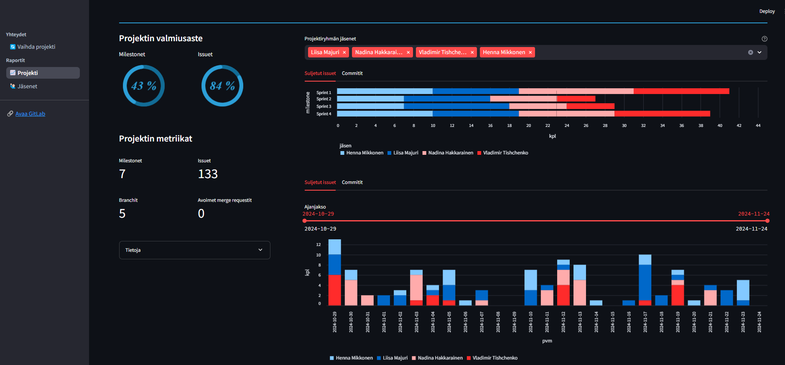
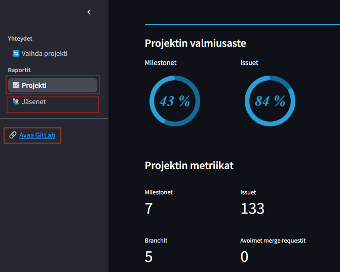
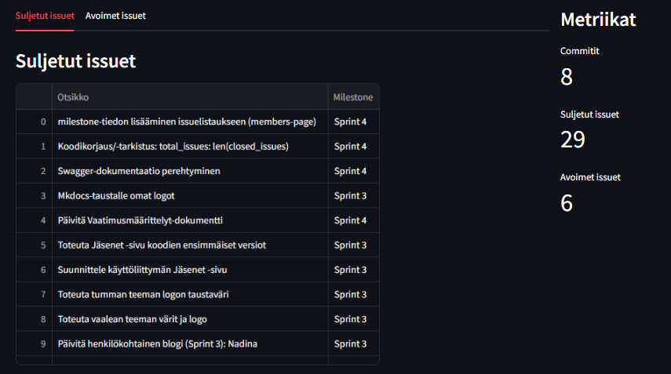

RepoRouskun käyttöohjeet
RepoRousku on kehitetty tukemaan projektitiimien toimintaa GitLabin ja Clockifyn avulla. Sen avulla käyttäjät voivat tarkastella projektidataa, kuten issueita, committeja ja työaikakirjauksia, ja luoda visuaalisia raportteja suoraan selaimessa. Tämä ohje auttaa sinua RepoRouskun käytössä.
Asennus ja käyttöönotto
-
Vaaditut työkalut:
- Docker: RepoRousku toimii Docker-kontissa, joten varmista, että Docker on asennettuna tietokoneellesi.
- GitLab ja Clockify-tunnukset: Tarvitset pääsyn GitLab-projektiin ja mahdollisesti Clockify-tilin, jos haluat hyödyntää tuntidataa.
-
Asennusohjeet:
-
Kloonaa RepoRouskun GitLab-repositorio:
-
Rakenna ja käynnistä Docker-kontti:
- Avaa selain ja siirry osoitteeseen: http://localhost:8501
-
Käyttöliittymän ohjeet
Kun käynnistät RepoRouskun ensimmäistä kertaa, sivu pyytää sinua syöttämään GitLab sekä Clockify Access tokenit.
Tip
Miten löydän GitLab tai Clockify Access tokenin? Kurkkaa täältä

Tokenit kannattaa tallentaa Tallenna tokenit -napukalla, jos tarkoituksenasi on tarkastella myöhemmin esim. toisen projektin tietoja.
Jotta pääset etusivusta pidemmälle, on sinun annettava Rouskuttimelle GitLab-repositorion osoite sekä GitLab Access Token. Clockifytä koskevat valinnat ovat vaihtoehtoisia.
Kun tarvittavat tiedot on lisätty, paina Rouskuta -painiketta.
Projekti -sivusto
Projekti-sivu koostaa projektin metriikat yhteen interaktiiviseen näkymään.

Jäsenet -sivusto
Sivuston vasemmasta laidasta pääset navigoitumaan sivujen välillä. Jäsenet -sivu koostaa jäsenkohtaiset tiedot projekteista ja siihen käytetyistä tunneista sekä Avaa GitLab-painikkeella päääset kätevästi suoraan projektin GitLab-repositorioon. 
Jäsenet-sivusto voi olla hyödyllinen etenkin, jos sinun on tarpeen raportoida projektikurssin aikana suorittamasi issuet ja projektiin käytetty työaika.

Ohje GitLab- ja Clockify Access Tokeneiden luontiin
GitLab Access Tokenin Generoiminen
-
Kirjaudu GitLab-tilillesi ja siirry Personal Access Token -asetuksiin.
-
Valitse oikeudet: Valitse read_api-oikeudet, jotta voit lukea projektidataa.

- Luo token ja kopioi se heti turvalliseen paikkaan. Huomioi, että et voi nähdä tätä tokenia enää myöhemmin.

Clockify Access Tokenin Generoiminen (valinnainen)
Jos haluat nähdä Clockify-dataa RepoRousku-mikropalvelussa, sinun tulee luoda myös Clockify Access Token.
-
Kirjaudu sisään Clockify-tilillesi Avaa Clockify ja kirjaudu sisään käyttäjätunnuksellasi ja salasanallasi.
-
Siirry Asetuksiin Kun olet kirjautunut sisään, vie hiiri oikeaan yläkulmaan ja klikkaa käyttäjäkuvaketta avataksesi valikon. Valitse "Preferences" (Asetukset).

-
Siirry "Advanced" -välilehteen Asetuksissa siirry vasemmalla olevaan "Advanced"-välilehteen.
-
Generoi API-avain Etsi "API Key" -osio ja klikkaa "Generate"-painiketta. Clockify luo sinulle API-avaimen, joka on ainutlaatuinen tilillesi.
Tärkeää: Kopioi API-avain heti ja tallenna se turvalliseen paikkaan, sillä et voi nähdä sitä enää myöhemmin.

- API-avaimen käyttö Nyt sinulla on käytettävissäsi Access Tokenit sekä GitLabilta että Clockifylta, joita voit käyttää RepoRousku-mikropalvelussa datan hakemiseen ja projektien hallintaan.
Tuki ja ongelmanratkaisu
- Sovellus ei käynnisty?
- Varmista, että Docker toimii oikein
- Käytä komentoa docker-compose logs (tai ChatGPT:tä) ongelmien ratkaisemiseksi
- GitLab -yhteys ei toimi?
- Varmista, että GitLab Access Token on oikein määritetlty
- Varmista, että repon linkki on projektin "juuresta"
- Clockify-tiedot eivät näy?
- Varmista, että Clockify Access Token on oikein määritetty
- Tarkista, että sinulla on tarvittavat oikeudet